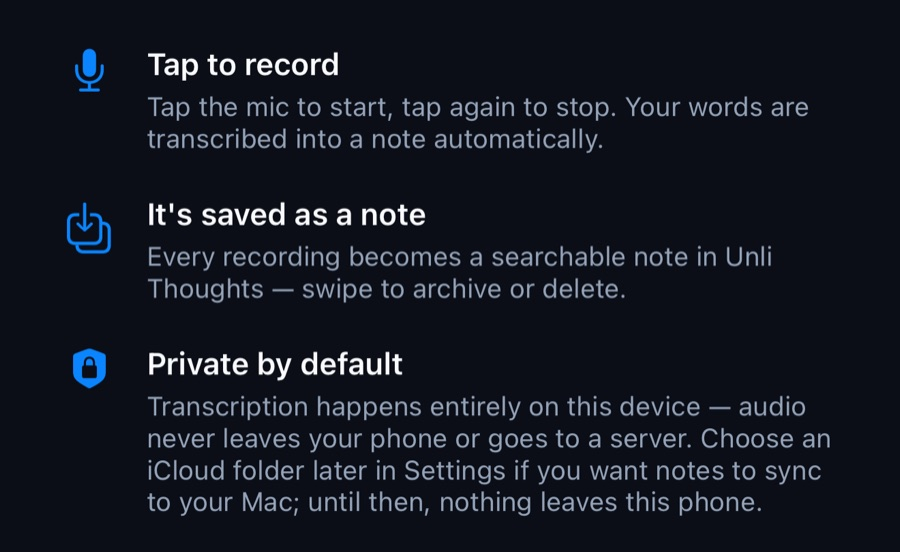
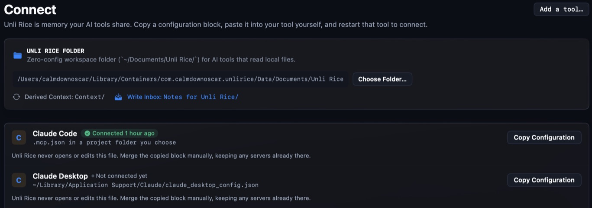
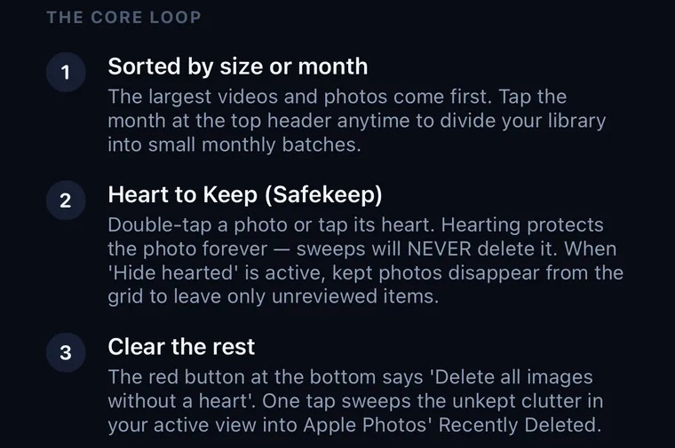
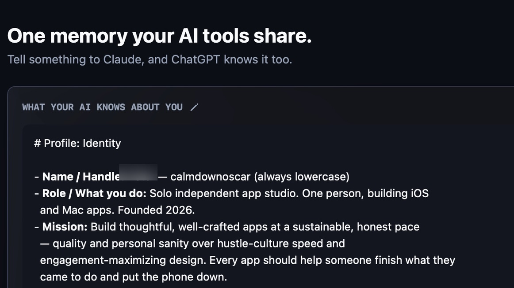

How I work
HR taught me the questions.
My full-time work is in enterprise HR, where every record belongs to a person and a system has to hold up on an ordinary Monday morning.
I bring the same four questions to every app I build. Here is where each one changed a real product.
Four questions, four decisions you can see Each screenshot is cropped from the shipped app; the outline marks the part that answers the question.
-
01
Purpose
Which data does the task actually need?
Unli Rice Capture turns speech into a note on the phone. The audio never leaves it, and nothing syncs until you choose an iCloud folder yourself.
See the app →
Unli Rice Capture · iPhoneProduct screenshot, cropped -
02
Access
What crosses a boundary, and who allows it?
Unli Rice never opens or edits another tool’s settings. It gives you a block to paste yourself. In Wedding Concierge, the AI key lives on a server relay, never in the app.
See the app →
Unli Rice · MacProduct screenshot, cropped -
03
Oversight
Who checks the answer before it counts?
Wedding Concierge answers from real map and place searches, not the model’s memory, and says it can make mistakes right where you read it. Shuttle Vision doesn’t judge a disputed rally: it replays it and lets the players decide.
See the app →Wedding Concierge · iPadProduct screenshot, cropped -
04
Recovery
If something goes wrong, how is it undone?
ClearSpace never sweeps a hearted photo, and everything it clears goes to Recently Deleted — up to 30 days to change your mind. Unli Disk only ever moves files to the Trash.
See the app →
ClearSpace · iPhoneProduct screenshot, cropped
Where the questions come from
They follow the principles of the GDPR and, where AI is involved, the EU AI Act, which lists AI used in recruitment and decisions about workers as high-risk. In HR, I separate AI that helps with administration from AI that evaluates people or influences employment decisions; the use case decides how much risk, fairness and human oversight work it needs.
This year I’ve also studied AI regulation, governance and risk mapping to keep those answers current. Asking the questions isn’t a compliance guarantee; it means the conversation with privacy and legal specialists starts from real answers.
Systems
Where each app’s data goes.
Data stays as close to you as the job allows. A server appears only where the job needs one, and its role is stated.
-
 ClearSpace
Photos are sorted and reviewed on the iPhone or iPad. No telemetry.
ClearSpace
Photos are sorted and reviewed on the iPhone or iPad. No telemetry.
-
 Unli Disk
Scans and cleans on the Mac. Deletions go to the Trash.
Unli Disk
Scans and cleans on the Mac. Deletions go to the Trash.
-

 Shuttle & Kitchen Vision
Phones link to each other directly for replay and scoring. No router, no server.
Shuttle & Kitchen Vision
Phones link to each other directly for replay and scoring. No router, no server.
-
 Unli Rice Capture
Speech becomes text on the phone. Notes move only to an iCloud folder you choose.
Unli Rice Capture
Speech becomes text on the phone. Notes move only to an iCloud folder you choose.
-
 Unli Rice
Notes live on your Mac. They reach an AI service only through the AI tools you connect, under those tools’ own terms.
Unli Rice
Notes live on your Mac. They reach an AI service only through the AI tools you connect, under those tools’ own terms.
-
 Wedding Concierge
Plans sync through your iCloud. Questions to the concierge go through a relay that holds the AI key and limits use.
Wedding Concierge
Plans sync through your iCloud. Questions to the concierge go through a relay that holds the AI key and limits use.
- OpenGrail Static pages in your browser: no accounts, no analytics, no AI service while you read.
AlwaysOnly if you choose
Accountable AI work · Unli Rice
The context carries over. The work stays visible.
Unli Rice is more than shared memory. It gives every connected AI session the same starting point, and shows what is still open across your projects.


- 1Not backed up. Work in a granted project folder that exists only on this Mac.
- 2Next step. What the project’s own notes say should happen next.
- 3Suggested by AI. Follow-ups an assistant filed, with who suggested them and when.
- 4Not merged yet. Finished work that isn’t part of the main version.
What the status can know. It is read from the folders you grant and the remote branches each repository already knows about. It doesn’t contact remotes or count commits, and items disappear once the work is actually done.
What instructions can do. House rules guide connected assistants; they can’t force them to follow. That’s why changes are proposed for a person to accept, and notes are append-only.
Building with AI
Built isn’t done. Done isn’t good.
AI makes a polished-looking first version cheap. That is exactly when it’s easiest to stop too early, or to ship something that looks like every other app. Four habits keep the speed honest.
INTENT-005 — The AI to-do list, on screen, in plain words
- The problem
- Who hits it, and when
- What “solved” looks like
- Explicitly out of scope
- Fixed constraints
- Questions discovery could not settle
-
Intent before generation
Every risky feature starts with an intent document: the problem, who meets it, what “solved” looks like and what is out of scope. The studio’s point of view is written down too: an app succeeds when you finish what you came to do and put the phone down — no streaks, infinite feeds or notification spam.
-
Standards in the machine
The same guardrails reach every AI tool at the start of a session. Where a rule can be checked, it is: a pre-commit hook scans every commit for secrets and misplaced plans, whichever tool wrote it.
-
Edit after building
A second model tries to break the plan before any code exists, and no tool’s “success” counts until the diff and a real build agree. OpenGrail’s generated first pass pinned 127 traditions to one spot near Jerusalem; it was rebuilt around a sourcing rule rather than patched.
-
Spend the saved time on the unusual
Speed goes into what a template wouldn’t produce: replay angles from three phones with no router, photo sizes estimated per codec, an atlas instead of 695 pages. Unusual ideas stay when they help the user; ones that only slow things down, like Unli Disk’s on-device vision model, go.
Does it look like every other app? A model’s first answer is the most common one, not the one this user needs.
Did I accept it because it looked finished fast? Strip the styling and walk the whole journey, failures included.
Will someone be able to maintain this next year? Cheap to make is not the same as cheap to own.
The three traps and “built isn’t done, done isn’t good” are borrowed from Katie Dill’s talk at Stripe, “How to scale intent, quality, and artistry with AI.”
For the technically curious: the pipeline behind the appsWhich model does what, and where a person checks the work.
A thought worth building
Spoken into Capture or written as a note
Unli Rice
The context travels with the work
Identity
Creator and user
Intent
Problem and outcome
Guardrails
Boundaries and standards
Repositories
Branches and worktrees
- Spark
Frame
Feasibility
- Astra
Challenge
The intent
- Claude
Plan
Architecture
- Codex
Pre-mortem
The plan
- Claude
Revise
The trade-offs
- Build agents
Implement
The settled plan
Review depth follows risk: servers, payments, persisted data, AI features and new dependencies take this path. Copy and layout changes take a direct one.
Diff · build and tests · the user journey
Plus a security review where it applies. A tool’s own “success” is not evidence.
Release and maintain
Handoff notes and follow-ups land back in Unli Rice